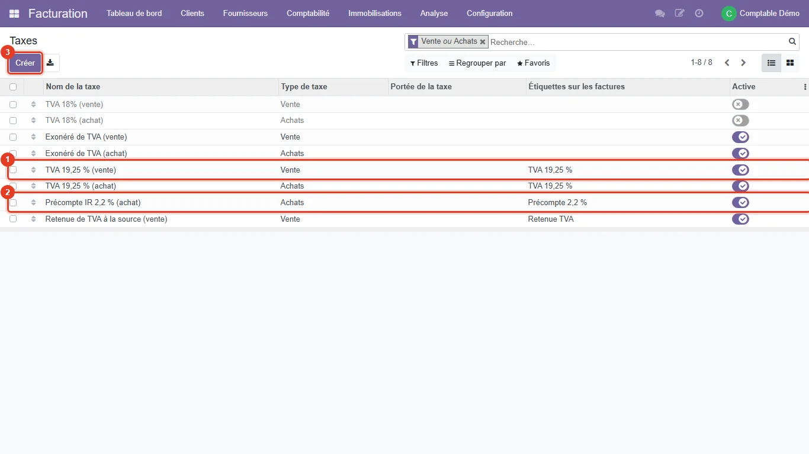
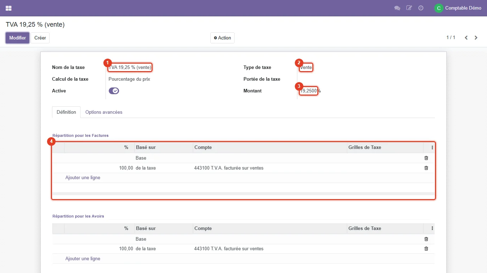

Objectif. Créer une TVA qui calcule le bon montant et l'envoie dans le bon compte.
Où dans Odoo 15Facturation › Configuration › Comptabilité › Taxes


Ce que vous faites
- Ouvrez la liste des Taxes et cliquez sur Créer (3).
- Nom (1) clair : « TVA 19,25 % (vente) ». Type (2) : Ventes ; une autre taxe pour les Achats.
- Calcul : Pourcentage du prix, montant (3) 19,25.
- Dans la répartition (4), mettez le compte : 443100 TVA facturée pour les ventes, 445200 TVA récupérable pour les achats.
- Archivez les anciennes taxes au lieu de les supprimer.
À vérifier avant de continuer
0 / 2À éviter.
- Ne modifiez pas le taux d'une taxe déjà utilisée : créez-en une nouvelle.
Exercice sur la base de test
Ouvrez la TVA 19,25 % (achat) et vérifiez son compte.